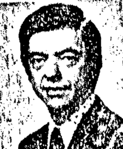

Harold Puthoff
Physicist

Began CIA-funded remote-viewing research at SRI International in 1972 with Russell Targ. 1,2
Open in the interactive Watcher
Related
- Stargate Project
- SRI International
- SRI psychic tests in Nature The SRI tests, published in Nature
Sources
- Harold E. Puthoff Wikipedia
- Russell Targ Wikipedia